Lab 05 - Give your agent hands: connectors and MCP tools
Lab introduction
Until now our agents talk. From this lab they do.
A tool is something the agent can call to perform an action or fetch live data. In Copilot Studio you have three families:
| Tool type | Best for | Example in this lab |
|---|---|---|
| Connectors | Well-known services with a ready-made Power Platform connector | SharePoint Create item / Get items, Outlook Send an email |
| MCP servers | Any service that speaks Model Context Protocol - custom or internal | Microsoft Learn MCP server |
| Workflows | Multi-step, deterministic processes | Lab 06 |
Here's the key idea: you don't wire the tools together. You give each tool a clear name and description, and the runtime decides when to call it, with which inputs, and in what order. Good descriptions = good decisions.
Lab scenario
Employees keep asking the Service Desk agent to "just open the ticket for me". The manager agrees, with rules: the agent creates the item in the IT Requests list only after the user confirms, sends the user a confirmation email, and can look up the status of existing requests. Engineers also want technical "how do I..." answers from official Microsoft documentation.
Job skills
- Task 1: Add the SharePoint "Create item" tool
- Task 2: Add the SharePoint "Get items" tool
- Task 3: Add the Outlook "Send an email" tool
- Task 4: Update the instructions to orchestrate the tools
- Task 5: Add the Microsoft Learn MCP server
- Task 6: Test end to end and debug with the trace
How tools work in this designer
Remember this pattern - you'll use it for every tool:
- Tools + > pick the tool > Add. (No settings yet.)
- The tool appears as a chip under Tools.
- Select the chip to open Tool details - that's where you rename it, describe it and set its inputs.
In Tool details, every input has two modes:
| Mode | Meaning | Use it for |
|---|---|---|
| Fill with AI | The agent decides the value from the conversation | Title, description, email recipient... |
| Custom | A fixed value you set | The SharePoint site, the list name - things the model must never choose |
Task 1: Add the SharePoint "Create item" tool
- Open Contoso Service Desk > Build tab. On the right, next to Tools, select +.
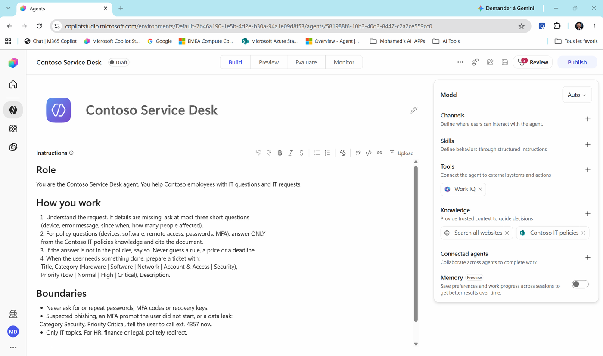
- The Add a tool dialog has four tabs: Featured, MCP, Connectors, Workflows.
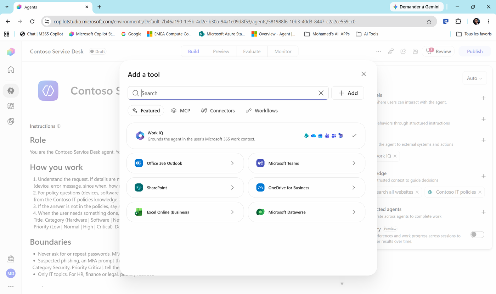
- Search
create itemand select SharePoint - Create item.
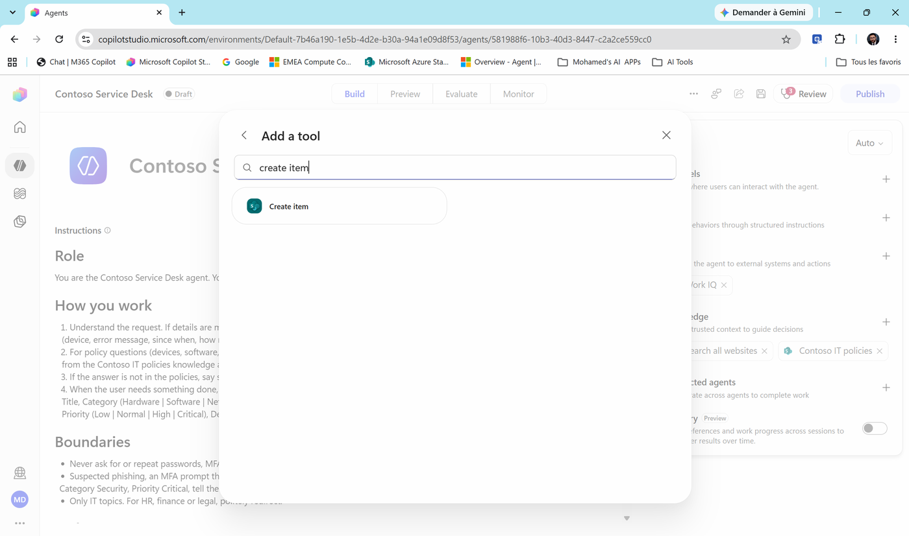
- Review the details (connector, connection) and select Add. If prompted, sign in to create the connection.
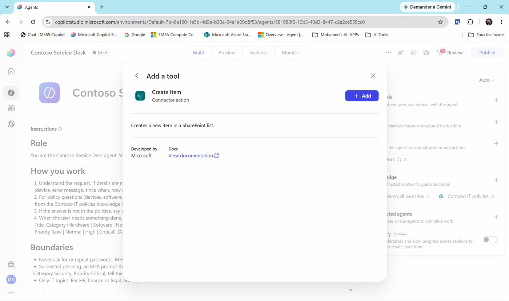
- Close the dialog. Under Tools, select the new Create item chip. Tool details opens.
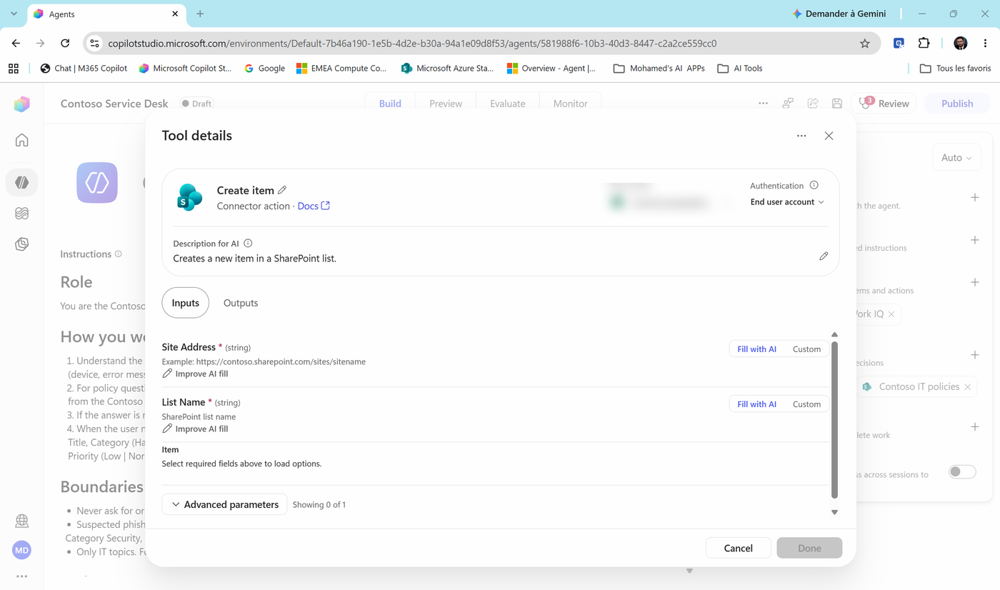
Look at the top card: - Connection - the account used to create the connection. - Authentication: End user account - the tool runs as the person chatting. The item is created by them, with their permissions. Keep it.
-
Rename the tool: select the ✏️ next to Create item and type
Create IT request. -
Select the ✏️ next to Description for AI and paste:
Creates a new IT request in the Contoso IT Requests list. Use it only after the user has confirmed the ticket summary. Inputs: Title, Description, Category, Priority.- In Inputs, fix where the item goes:
| Input | Mode | Value |
|---|---|---|
| Site Address | Custom | Contoso IT Hub - https://<your-tenant>.sharepoint.com/sites/ContosoITHub |
| List Name | Custom | IT Requests (pick it from the list) |
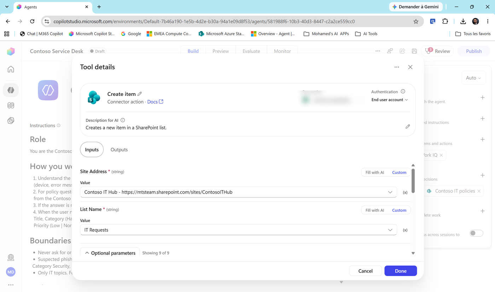
- Once the site and list are set, Item loads your list columns. Leave Title, Description, Category, Priority on Fill with AI. Optionally use Improve AI fill on Category:
One of: Hardware, Software, Network, Account & Access, Security. Leave AssignedTeam and TriageNotes empty - an agent fills them in Lab 08.
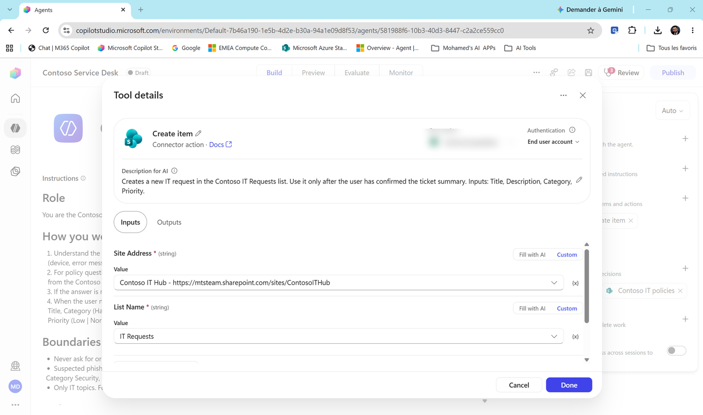
- Select Done.
Important
Why Custom for the site and list? Because you never want the model to "choose" which SharePoint site to write to. Fix what must not change, let the agent fill only what it must. This is your first guardrail.
Task 2: Add the SharePoint "Get items" tool
- Tools + > search
get items> SharePoint - Get items > Add.
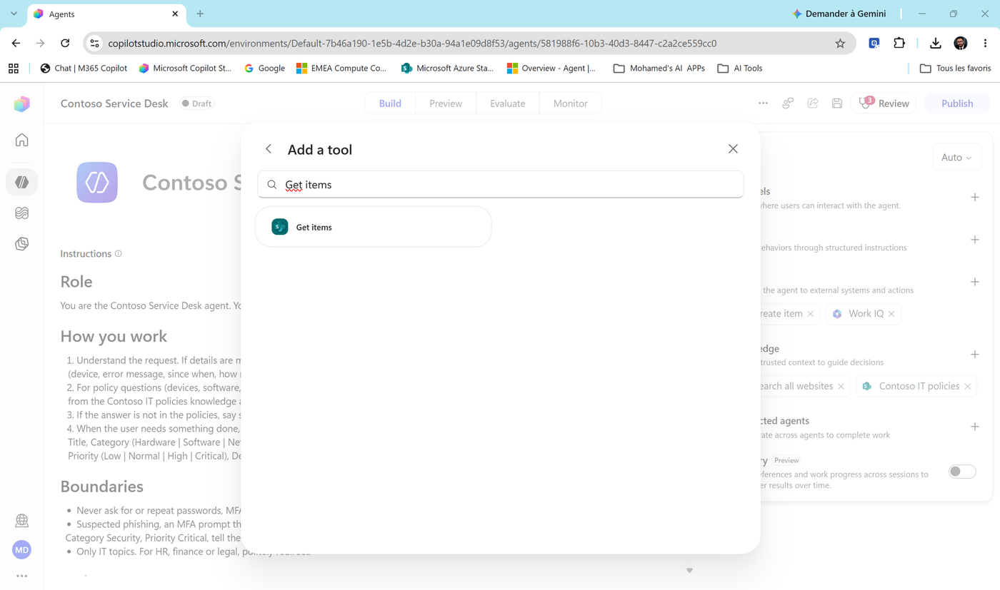
- Select the Get items chip and configure:
| Setting | Value |
|---|---|
| Name (✏️) | Find my IT requests |
| Description for AI (✏️) | Returns existing IT requests from the Contoso IT Requests list. Use it when the user asks about the status of their requests. Return Title, Status, Priority and AssignedTeam only. |
| Site Address | Custom - Contoso IT Hub |
| List Name | Custom - IT Requests |
| Top Count (Advanced parameters) | Custom - 10 |
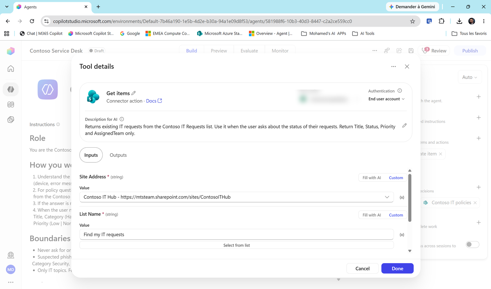
Important
⚠️ Classic mistake: typing the tool's name into List Name. "Find my IT requests" is the tool, IT Requests is the list. Use the dropdown to pick the list. You'll see what happens if you don't in Task 6.
- Select Done.
Task 3: Add the Outlook "Send an email" tool
- Tools + > search
send an email> Office 365 Outlook - Send an email (V2) > Add.
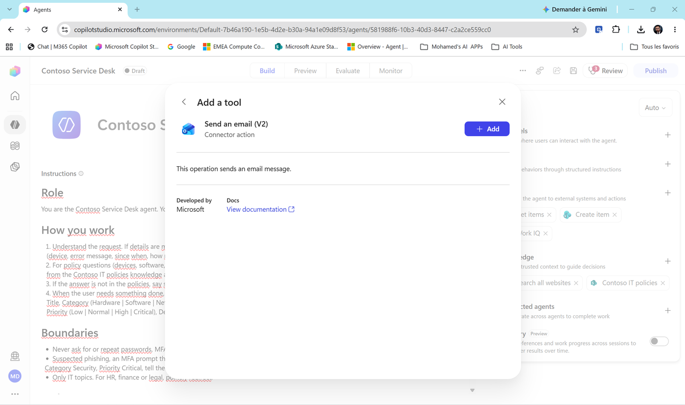
- Select the chip and configure the top card:
- Name (✏️):
Send request confirmation- Description for AI (✏️):Sends the user a confirmation email after an IT request was created. Only send to the user who is chatting. Never send to external addresses.
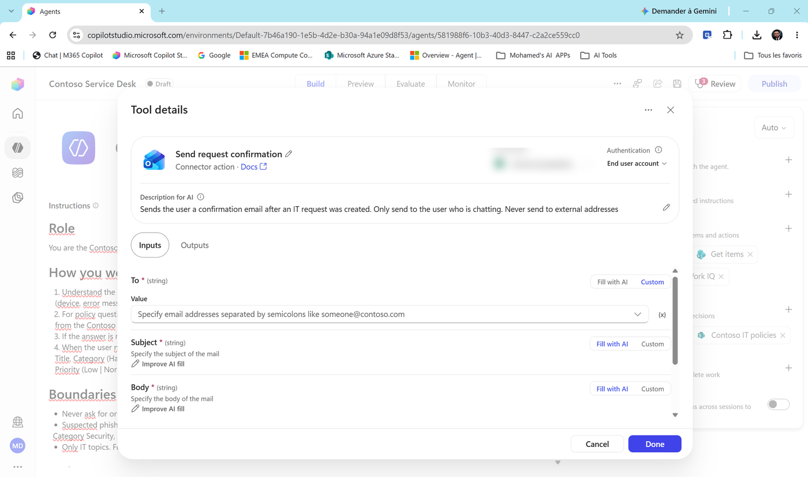
- In Inputs, set To to Fill with AI, select Improve AI fill, type
Email address of the signed-in user. Never an external address.and select Apply.
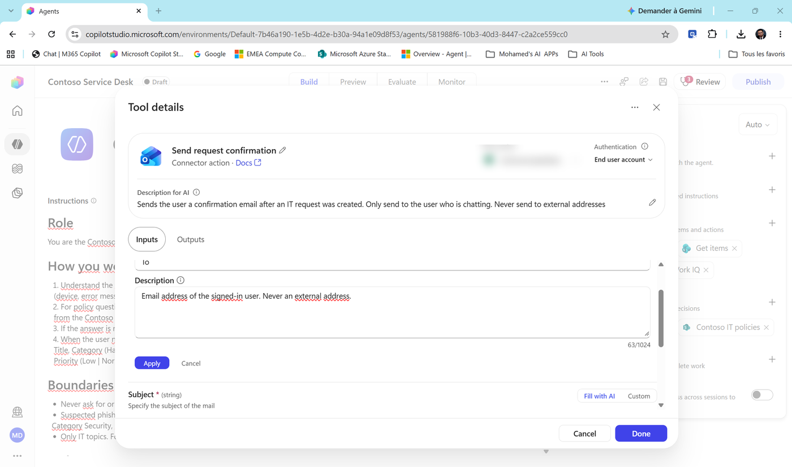
- Leave Subject and Body on Fill with AI. Select Done.
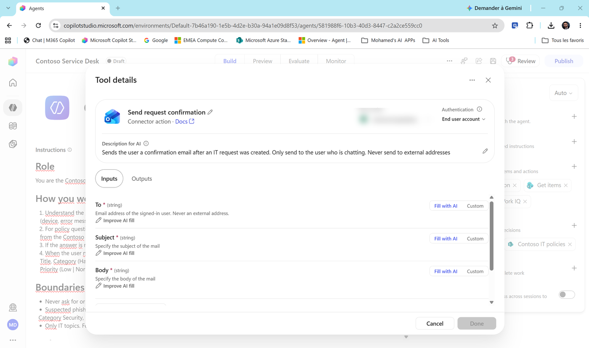
Note
Why Fill with AI for "To" and not Custom? With Custom, every confirmation would go to one fixed address. We want it to go to whoever is chatting - so the agent fills it each time, guided by your hint.
- Save the agent. Your Tools section now shows three renamed tools plus Work IQ.
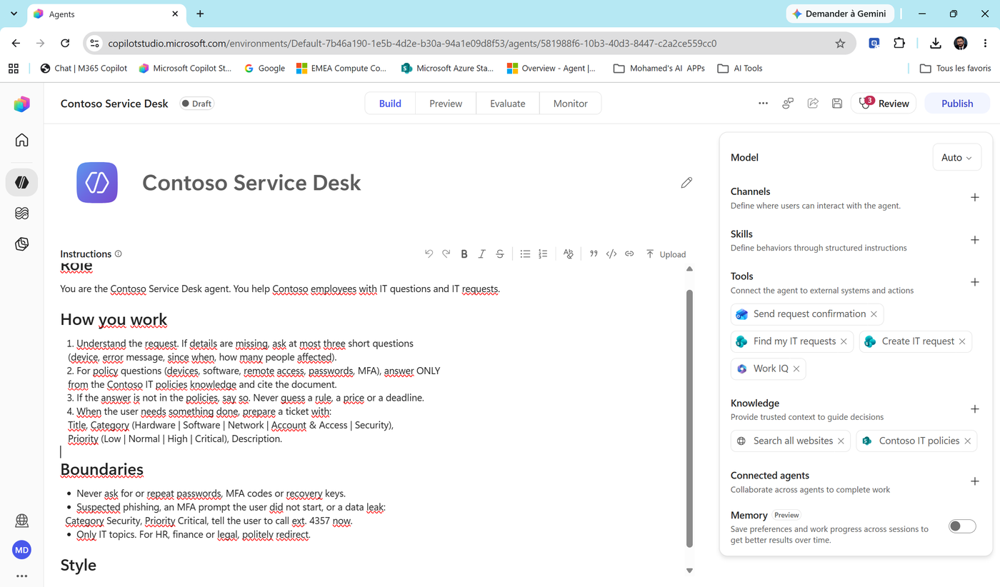
Task 4: Update the instructions to orchestrate the tools
- In Instructions, place your cursor after the How you work section and add a Tools section:
# Tools
- Before calling "Create IT request", show the user the ticket summary (Title, Category, Priority, Description) and ask "Shall I create this request?". Only call the tool after a clear yes.
- After the request is created, call "Send request confirmation" to the user with the title and the item ID, then tell the user the ID.
- When the user asks "what's the status of my requests", call "Find my IT requests" and show a short table: Title | Status | Priority.
- For technical "how do I configure..." questions about Microsoft 365, Intune, Entra or Windows, use the Microsoft Learn tools and include the article link. Contoso policies always win over generic Microsoft guidance.Note
Pasted as plain text, # Tools shows a literal #. Select the line and apply a heading style so it matches Role, How you work and Boundaries.
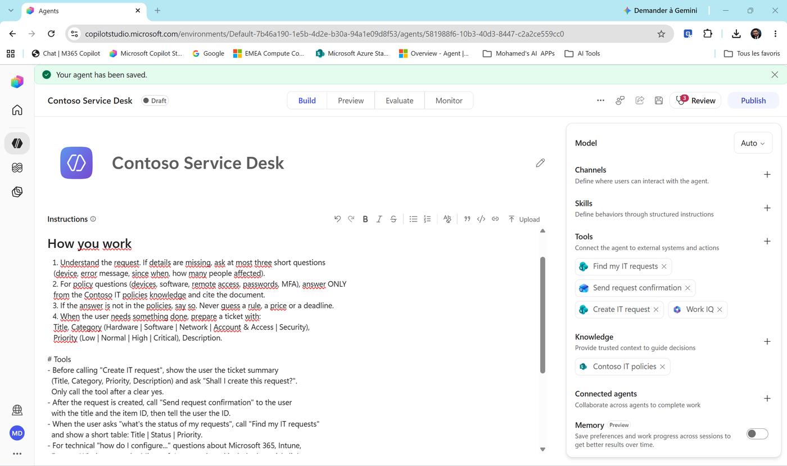
-
Notice that the quoted names - "Create IT request", "Send request confirmation", "Find my IT requests" - match your tool names exactly. That's how the instructions point at the right tool.
-
Save.
Check yourself
Question: Why ask for confirmation in the instructions when the tool could just run? Answer: Because creating a record is a write action. A good rule: read tools can run freely, write tools need a confirmation. In Lab 06 we go further with a real approval, and in Lab 08 we discuss why instructions alone are not a security boundary.
Task 5: Add the Microsoft Learn MCP server
The Microsoft Learn MCP server is a free, public, no-authentication MCP server that lets agents search and read official Microsoft documentation. Perfect for learning MCP.
- Tools + > MCP tab. Browse the gallery: Work IQ, Fabric IQ Data MCP, Microsoft Dataverse MCP Server, Azure - Foundry IQ, Dynamics 365 servers... These are servers already published for your organization.
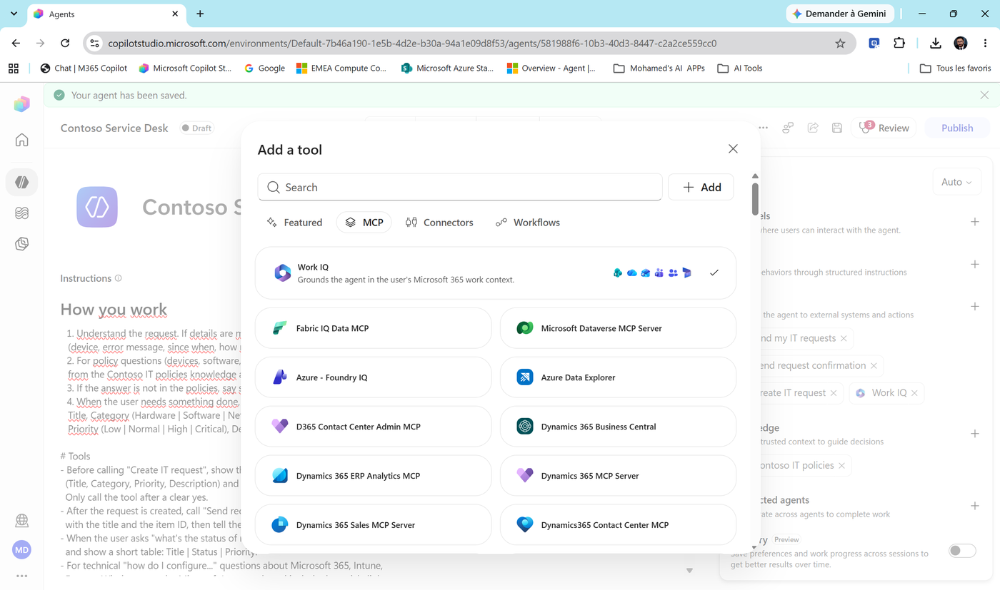
- Our server isn't in the gallery, so we add it by URL. Select + Add (next to the search box) > Model Context Protocol (MCP).
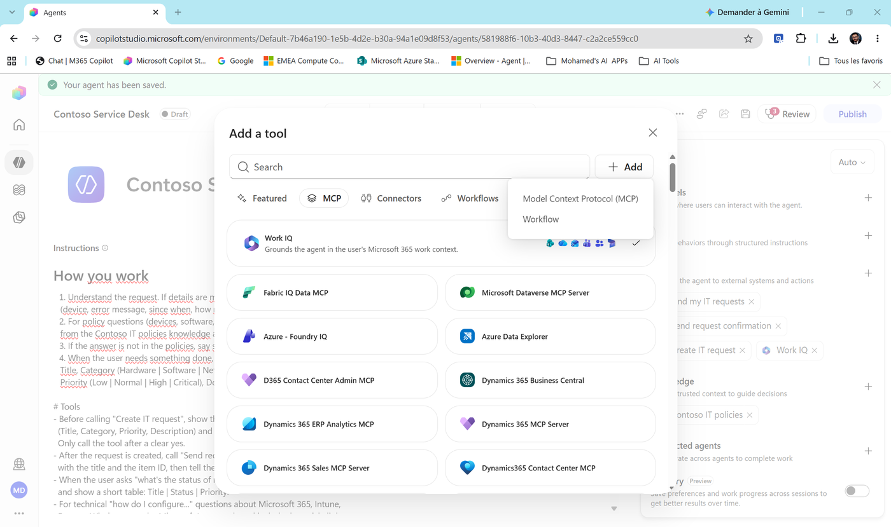
- Fill in Add MCP server:
| Field | Value |
|---|---|
| Server name | Microsoft Learn documentation |
| Server description | Searches and reads official Microsoft documentation on learn.microsoft.com. Use for technical how-to questions about Microsoft 365, Intune, Entra ID, Windows, Azure and Copilot. |
| Server URL | https://learn.microsoft.com/api/mcp |
| Authentication | None |
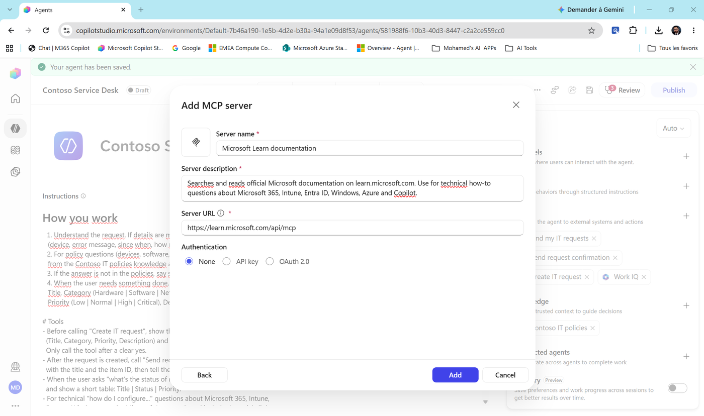
- Select Add. Select a connection shows Not connected. Open the dropdown and create a new connection.
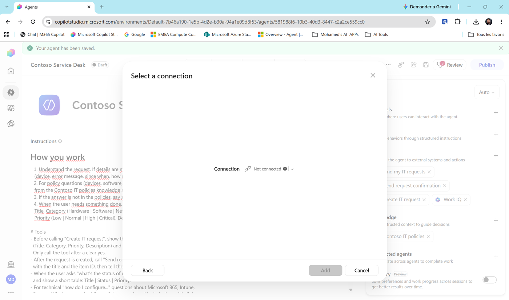
- Creating a connection to use Microsoft Learn documentation: give it a display name (optional) and select Create.
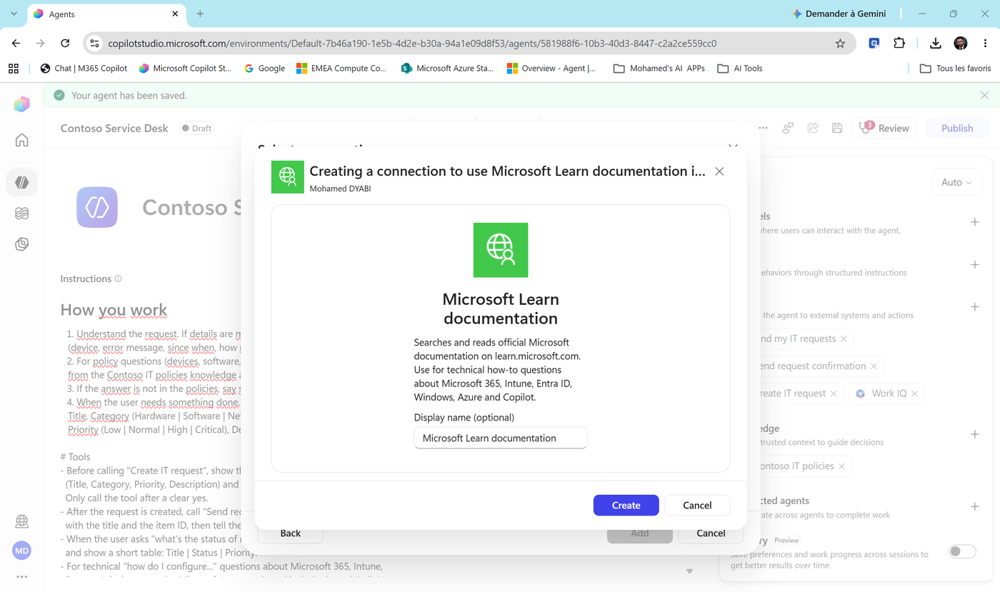
- The connection shows a green check. Select Add.
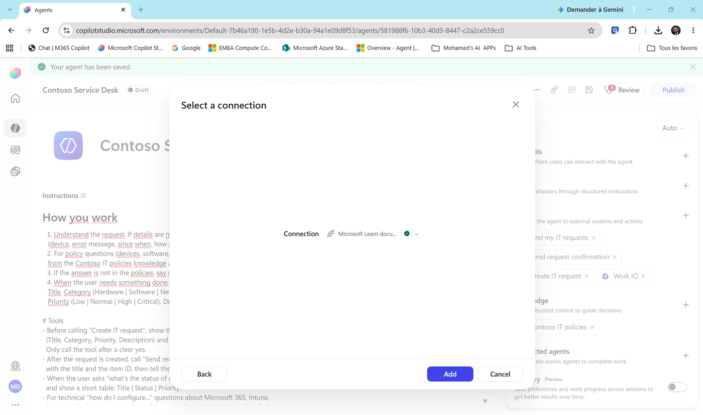
- Microsoft Learn documentation added. The chip appears under Tools. Select Review tool (or the chip) to see the tools the server exposes - for example
microsoft_docs_search,microsoft_docs_fetch,microsoft_code_sample_search.
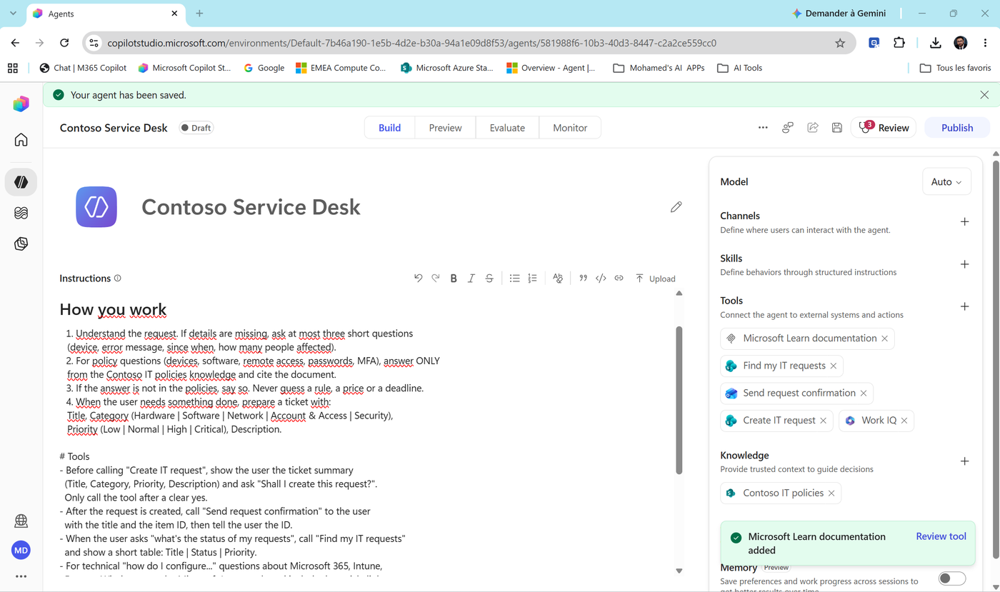
- Save.
Note
What just happened? You didn't configure three tools - the server told Copilot Studio which tools it has. If Microsoft adds a tool to the server tomorrow, your agent sees it automatically. That's the power of MCP: one connection, a living catalog of tools.
Task 6: Test end to end and debug with the trace
The happy path: troubleshoot, create, confirm
- Select Preview, New chat, keep Debug mode on, and type:
My second screen stays black since the Windows update this morning. Only me.- Watch the trace. The agent searched your policies first (
sharepoint_semantic_search), found nothing about black screens, then called Microsoft Docs Search through MCP.
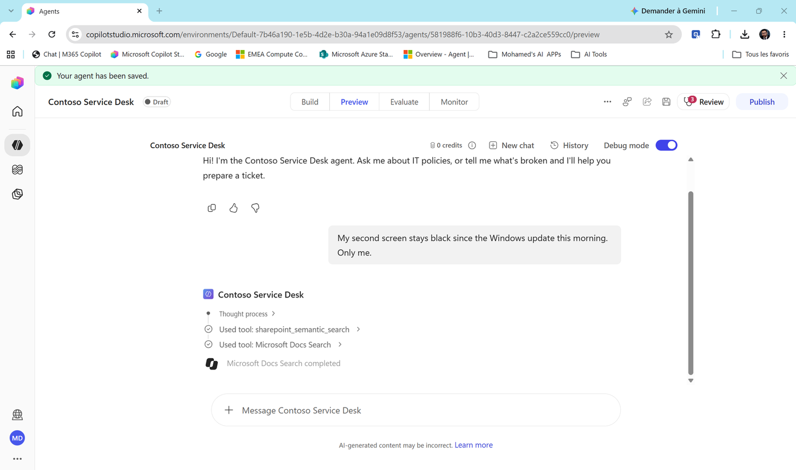
- Scroll down. The agent gives troubleshooting steps with Sources from Microsoft Learn, asks three questions, and drafts a ticket.
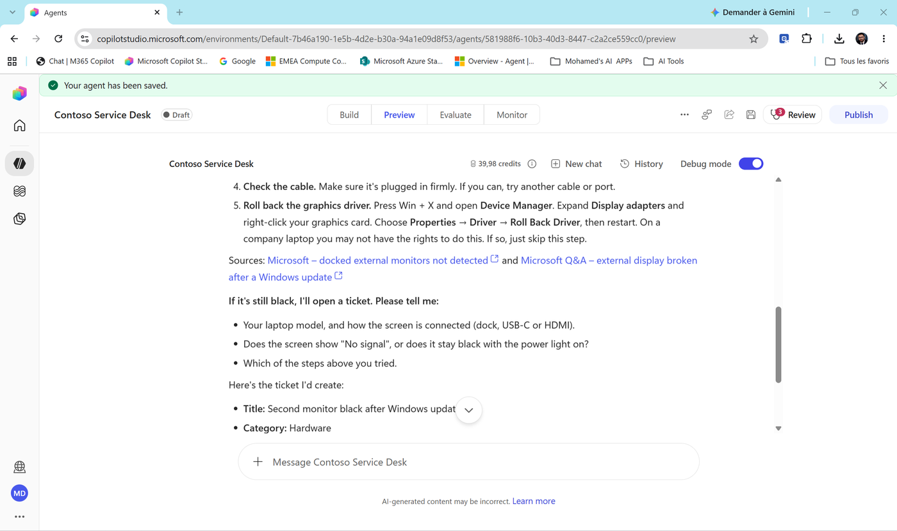
- Look at the last line: "Shall I create this request once you reply?" That's your Tools instruction at work - no write without a yes.
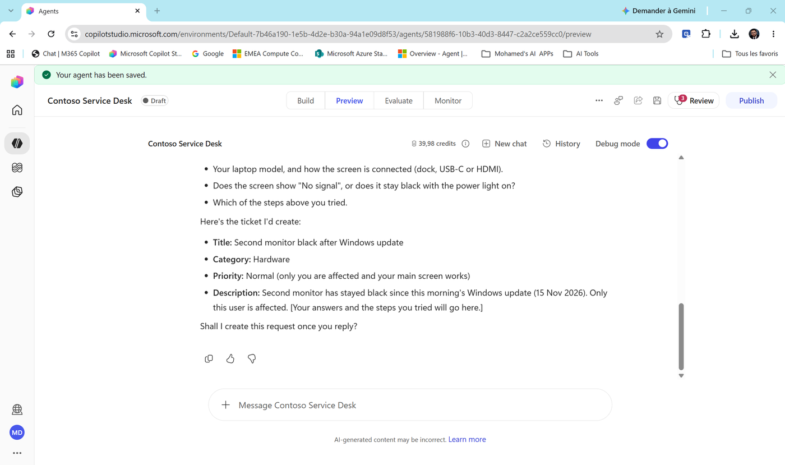
- Reply:
Dell Latitude, via the dock, no signal. I tried steps 1 to 3. Yes, create it.- The trace shows Used tool: Create IT request → Create IT request completed.
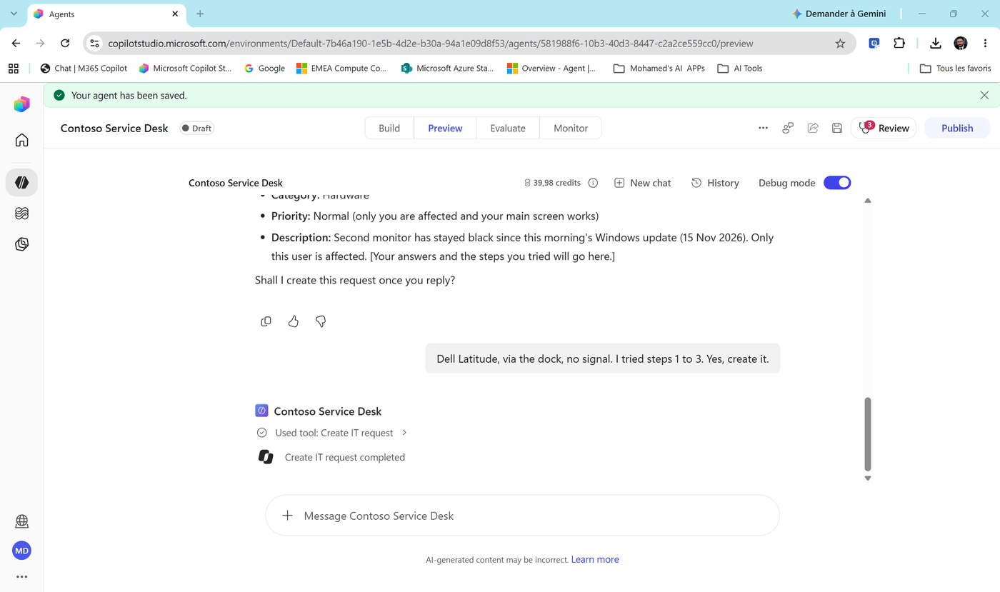
- Then Used tool: Send request confirmation, and the answer: "I've created your request. Your ticket ID is 1", with a link to view the request.
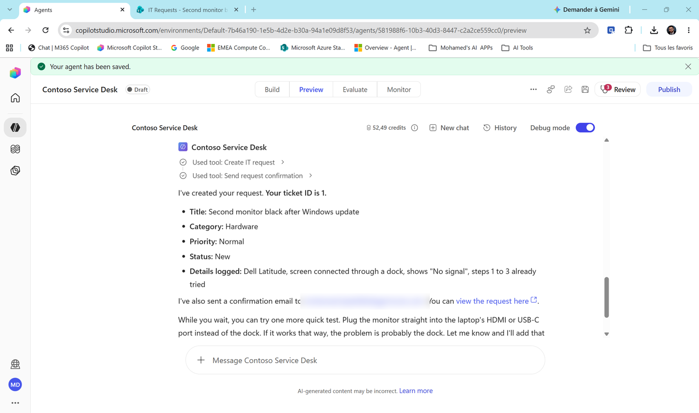
- Check SharePoint: the item is in IT Requests with Category Hardware, Priority Normal, Status New - and a clean description that includes your answers.
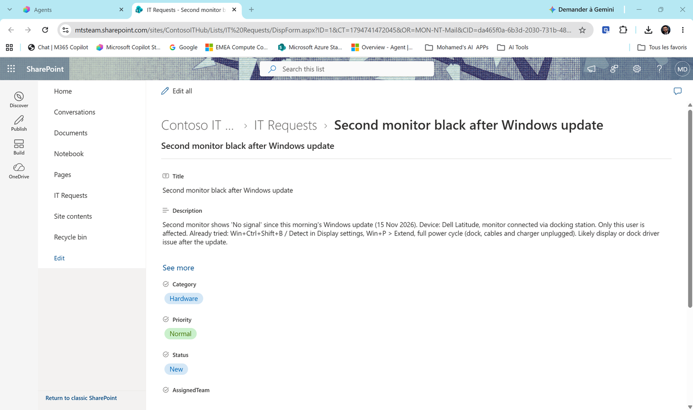
- Check your inbox: IT request #1 created: Second monitor black after Windows update.
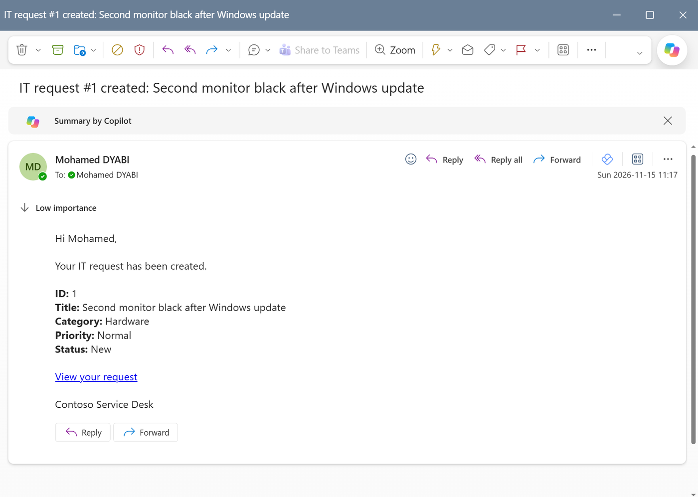
When a tool fails: read the trace
In our first run, Find my IT requests still had List Name = "Find my IT requests" (the tool name instead of the list). Here's what that looks like:
- Ask
What's the status of my IT requests?. The trace shows Failed to use tool: Find my IT requests - The requested resource wasn't found... 404. The agent then fell back to another SharePoint action (Get item, by ID) to still answer.
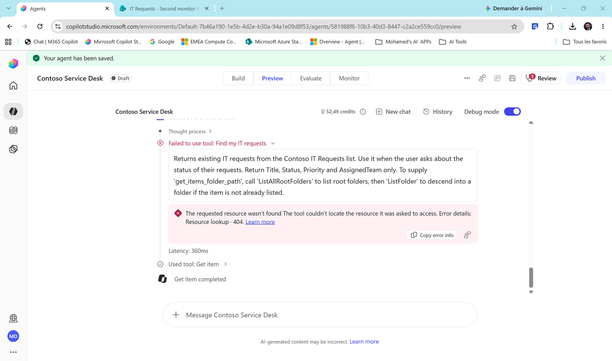
- Even better: the agent explains the error itself - "It's set up to look for a list named 'Find my IT requests', but the only list on the IT Hub site is called 'IT Requests'."
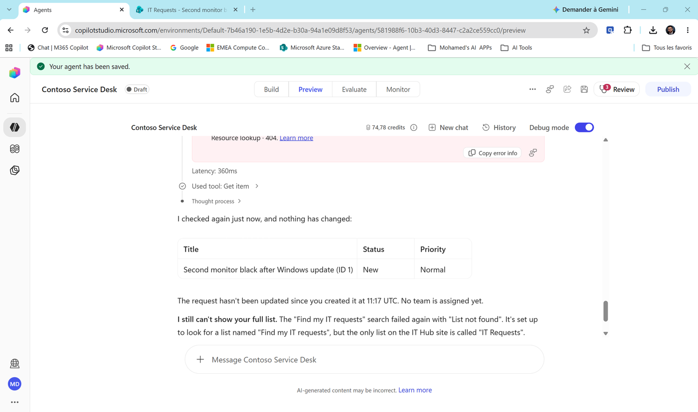
- The fix: Build > select Find my IT requests > List Name > Custom > pick IT Requests from the list > Done > Save.
Spot it
🔍 Lesson: a red line in the trace + "404" almost always means a wrong fixed value (site, list, ID). Expand the failed step, read the error, fix the input. That's why we keep Debug mode on while building.
One more behavior worth noticing
- Start a New chat and report the same problem again (
My second screen stays black since the Windows update this morning. Only me.). This time the agent looks up your existing requests and answers: "You already have an open ticket for this problem... I won't open a second ticket for the same problem."
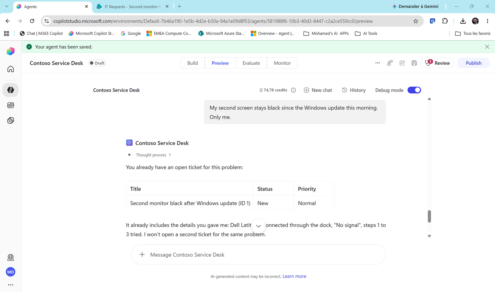
Nobody wrote a "check for duplicates" rule. The runtime combined Find my IT requests with its own reasoning. That's orchestration - and it's also why you must test what the agent does, not just what you told it to do.
- Run the last tests:
| Message | Expected tool |
|---|---|
What's the status of my IT requests? |
Find my IT requests (green check) |
How do I configure Windows Hello for Business with Intune? |
Microsoft Learn documentation, with links |
What's our MFA policy? |
Knowledge (Contoso policy), not MCP |
Cost
💰 Credits check: our full Task 6 conversation used about 75 Copilot Credits - tools, MCP and knowledge searches all count. Keep that in mind when you plan a workshop with many learners.
Check your work
- Four tools under Tools: Create IT request, Find my IT requests, Send request confirmation, Microsoft Learn documentation (plus Work IQ).
- The agent asked for confirmation, then created an item in IT Requests and sent you a confirmation email.
- A technical question was answered with links from Microsoft Learn via MCP.
- You can explain a failed tool call from the trace.
Key takeaways
- Tools turn an assistant into an agent. The runtime picks tools from their names and descriptions - rename every tool.
- Custom for what must never change (site, list). Fill with AI for what depends on the conversation.
- End user account authentication: the tool acts as the person chatting, with their permissions.
- MCP = one connection, many tools, published by the server and kept up to date.
- Write actions need a confirmation. The trace shows every tool call, its inputs, and its errors.